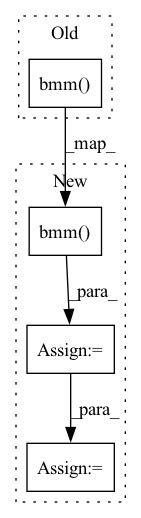

Pattern ID :34804
Before Change
if self.dropout is not None:
att = self.dropout(att)
m = torch.bmm( att, v) .view(-1, att.size(1), self._h_dims)
m = self.proj_m(m)
return mAfter Change
if self.dropout is not None:
att = self.dropout(att)
m = torch.bmm( att, v) .transpose(0, 1).contiguous()
m = self.m(m).view(m.size(0), -1, self._h_dims).transpose(0, 1)
return m
In pattern: SUPERPATTERN
Frequency: 4
Non-data size: 4
Instances Fragment ID: 99781186
Project Name: yeliudev/nncore
Commit Name: e58a22da4dce9778c38aae284b0c80d84937b04c
Time: 2021-11-05
Author: yeliudev@outlook.com
File Name: nncore/nn/blocks/transformer.py
M Class Name: MultiHeadAttention
N Class Name: MultiHeadAttention
M Method Name: forward(5)
N Method Name: forward(5)
M Parent Class: nn.Module
N Parent Class: nn.Module
M File Name: nncore/nn/blocks/transformer.py
N File Name: nncore/nn/blocks/transformer.py
M Start Line: 79
M End Line: 98
N Start Line: 79
N End Line: 105
Before Change
rot_mat = torch.zeros_like(S)
rot_mat[mask_zero == 0] = torch.eye(3, device=S.device)
rot_mat_non_zero = torch.bmm( V, U.transpose(1, 2))
rot_mat[mask_zero != 0] = rot_mat_non_zero
assert torch.sum(torch.isnan(rot_mat)) == 0, ("rot_mat", rot_mat)
After Change
rot_mat[mask_zero == 0] = torch.eye(3, device=S.device)
// rot_mat_non_zero = torch.bmm(V, U.transpose(1, 2))
det_u_v = torch.det(torch.bmm( V, U.transpose(1, 2)) )
det_modify_mat = torch.eye(3, device=U.device).unsqueeze(0).expand(U.shape[0], -1, -1).clone()
det_modify_mat[:, 2, 2] = det_u_v
rot_mat = torch.bmm(torch.bmm(V, det_modify_mat), U.transpose(1, 2))
rot_mat_non_zero = rot_mat
rot_mat[mask_zero != 0] = rot_mat_non_zero
assert torch.sum(torch.isnan(rot_mat)) == 0, ("rot_mat", rot_mat) Fragment ID: 99781185
Project Name: jeff-sjtu/hybrik
Commit Name: ec9c1f15203c27715794e1cad24f61cd7c2e41df
Time: 2022-02-16
Author: biansy000@github.com
File Name: hybrik/models/layers/smpl/lbs.py
M Class Name: AnonimousClass
N Class Name: AnonimousClass
M Method Name: batch_get_pelvis_orient_svd(5)
N Method Name: batch_get_pelvis_orient_svd(5)
M Parent Class:
N Parent Class:
M File Name: hybrik/models/layers/smpl/lbs.py
N File Name: hybrik/models/layers/smpl/lbs.py
M Start Line: 778
M End Line: 778
N Start Line: 779
N End Line: 784
Before Change
U, _, V = torch.svd(S)
rot_mat = torch.bmm( V, U.transpose(1, 2))
assert torch.sum(torch.isnan(rot_mat)) == 0, ("3children rot_mat", rot_mat)
return rot_mat
After Change
U, _, V = torch.svd(S)
// rot_mat = torch.bmm(V, U.transpose(1, 2))
det_u_v = torch.det(torch.bmm( V, U.transpose(1, 2)) )
det_modify_mat = torch.eye(3, device=U.device).unsqueeze(0).expand(U.shape[0], -1, -1).clone()
det_modify_mat[:, 2, 2] = det_u_v
rot_mat = torch.bmm(torch.bmm(V, det_modify_mat), U.transpose(1, 2))
assert torch.sum(torch.isnan(rot_mat)) == 0, ("3children rot_mat", rot_mat)
return rot_mat Fragment ID: 99781160
Project Name: jeff-sjtu/hybrik
Commit Name: ec9c1f15203c27715794e1cad24f61cd7c2e41df
Time: 2022-02-16
Author: biansy000@github.com
File Name: hybrik/models/layers/smpl/lbs.py
M Class Name: AnonimousClass
N Class Name: AnonimousClass
M Method Name: batch_get_3children_orient_svd(5)
N Method Name: batch_get_3children_orient_svd(5)
M Parent Class:
N Parent Class:
M File Name: hybrik/models/layers/smpl/lbs.py
N File Name: hybrik/models/layers/smpl/lbs.py
M Start Line: 877
M End Line: 877
N Start Line: 884
N End Line: 887
Before Change
// Reshape value mapping
value_mapping = value_mapping.view(batch_size, -1, height * width)
// Attention features
attention_features = torch.bmm( value_mapping, attention)
// Reshape to original shape
attention_features = attention_features.view(batch_size, channels, height, width)
// Residual mapping and gamma multiplication
output = self.gamma * attention_features + inputAfter Change
key = key.view(-1, channels // 8, height * width // 4)
value = value.view(-1, channels // 2, height * width // 4)
// Calc attention map
attention_map = torch.bmm( query, key) .softmax(dim=-1).permute(0, 2, 1)
// Apply attention map to value to obtain the attention output features
attention_features = torch.bmm(value, attention_map)
// Reshape attention features
attention_features = attention_features.view(-1, channels // 2, height, width)
// Get output features
output = self.attention_convolution(attention_features)
// Residual mapping and gamma multiplication
output = self.gamma * output + input
return output Fragment ID: 99781182
Project Name: christophreich1996/semantic_pyramid_for_image_generation
Commit Name: 8d56a34edd21d5874a8d45af97eba926a6f171c0
Time: 2021-03-29
Author: 34400551+ChristophReich1996@users.noreply.github.com
File Name: models.py
M Class Name: SelfAttention
N Class Name: SelfAttention
M Method Name: forward(2)
N Method Name: forward(2)
M Parent Class: nn.Module
N Parent Class: nn.Module
M File Name: models.py
N File Name: models.py
M Start Line: 252
M End Line: 267
N Start Line: 257
N End Line: 272